반도체설계산업기사 (2019-04-27 기출문제)
1과목: 반도체공학
1. PN 접합 다이오드에서 순방향 바이어스를 인가해주면 나타나는 현상에 대한 설명으로 옳은 것은?
- 전위장벽이 높아진다.
- 공간전하의 영역의 폭이 좁아진다.
- 전장이 증가한다.
- 확산용량이 줄어든다.
(정답률: 77%)

2. 반도체 재료에 전계를 가하면 정공의 드리프트(drift) 속도의 방향은?
- 전계와 같은 방향이다.
- 전계와 반대 방향이다.
- 전계와 직각 방향이다.
- 전계와 무관한 자유운동을 한다.
(정답률: 75%)
3. MOSFET와의 설명으로 틀린 것은?
- 게이트-소스간에 전압 VGS을 인가하면 드레인과 소스사이에 채널이 형성된다.
- 드레인-소스간에 역방향 전압 VDS을 인가하면 드레인 전류 ID가 흐른다.
- VGS을 증가시키면 채널의 폭이 두꺼워져 드레인 전류 ID가 증가한다.
- BJT에 비해 전력소모가 많은 트랜지스터이다.
(정답률: 78%)
4. MOS 집적회로 공정에서 가장 소형화하기 어려운 소자는?
- 저항
- 인덕터
- 커패시터
- 트랜지스터
(정답률: 76%)
5. 전류가 역방향 바이어스에 의해 차단되면 나타나는 현상으로 옳은 것은?
- 다수 캐리어로 인해 전류가 약간 흐른다.
- 소수 캐리어로 인해 아주 작은 전류가 흐른다.
- 전위 장벽이 낮아져서 다수 캐리어에 의해 큰 전류가 흐른다.
- 공핍층이 좁아져서 다수 캐리어에 의해 큰 전류가 흐른다.
(정답률: 77%)
6. BJT 회로에서 출력전압과 입력전압이 거의 동위상이 되어 이미터 폴로어(emitter follower)라고도 부르는 회로는?
- 이미터 공통회로
- 베이스 공통회로
- 컬렉터 공통회로
- 게이트 공통회로
(정답률: 73%)
7. P형과 N형 반도체에서 다수 반송자(Carrier)를 옳게 나타낸 것은?
- P형 : 정공, N형 : 전자
- P형 : 전자, N형 : 전자
- P형 : 정공, N형 : 정공
- P형 : 전자, N형 : 정공
(정답률: 86%)
8. MOSFET 소자의 채널 폭과 길이가 짧아지면서 발생하는 단채널 효과(short channel effect)가 아닌 것은?
- 드레인 전압에 의한 문턱전압 감소
- 속도 포화 현상
- 전류 포화 현상
- 드레인 항복 전압 감소
(정답률: 56%)
9. 실리콘 잉곳이 1016 비소원자/cm3로 도핑되어 있을 때, 실온에서의 캐리어 농도는 얼마인가? (단, 진성 캐리어 밀도는 1.5×1010/cm3이다.)
- 1.5×1010/cm3
- 2.25×104/cm3
- 1026/cm3
- 1.5×1026/cm3
(정답률: 67%)
10. Si(실리콘) 원소에 대한 설명 중 틀린 것은?
- 하나의 원자가 14개의 전자를 가지고 있다.
- 하나의 원자가 4개의 가전자를 가지고 있다.
- 다이아몬드 격자구조를 가지고 있다.
- 이온결합에 의해 결정을 이루고 있다.
(정답률: 78%)
11. 실리콘 공정에서 산화막에 대한 설명으로 틀린 것은?
- 건식 산화 공정보다 습식 산화 공정의 반응 속도가 빠르다.
- 이미 형성된 산화막이 추후의 산화공정에서의 성장속도에 영향을 준다.
- 건식 산화 공정으로 형성된 산화막의 구조가 더 치밀하다.
- 산화막은 절연체이다.
(정답률: 62%)
12. 도체에 1A의 전류가 흐를 때 1초 동안에 기준 단면적을 통과하는 전자의 개수는? (단, 전하의 전하량은 –1.6×10-19C)
- 1.6×10-19
- 1.6×1019
- 6.25×1018
- 6.25×10-20
(정답률: 64%)
13. 쌍극성 접합 트랜지스터에 대한 설명 중 옳은 것은?
- 컬렉터의 농도가 이미터, 베이스에 비해 높게 제작된다.
- 컬렉터 접합의 역방향 전압이 증가할수록 실효 베이스 폭은 증가한다.
- 전자와 정공이 모두 이미터 전류 형성에 기여한다.
- 이미터 전류에 의해 컬렉터 전류를 제어할 수 있다.
(정답률: 53%)
14. 계단 접합인 PN 접합에서 P영역과 N영역의 불순물 밀도가 각각 1018cm-3, 1015cm-3 일 때, 상온에서의 접촉전위차는 얼마인가? (단, K·T/q = VT = 26mV 이고, 진성 캐리어의 농도 ni = 1.5×1010cm-3으로 가정)
- 0.657V
- 0.707V
- 0.757V
- 0.807V
(정답률: 58%)
15. 부성저항 특성을 가지는 다이오드는?
- 제너 다이오드
- 터널 다이오드
- 쇼트키(schottky) 다이오드
- 바렉터(varactor) 다이오드
(정답률: 59%)
16. PN 접합의 전압전류 특성에 대한 설명으로 옳은 것은?
- 금지대 폭이 큰 반도체일수록 항복 전압이 낮다.
- 포화전류가 흐르도록 하는 바이어스 방향은 순방향 바이어스이다.
- N 영역에 음(-)의 전압을 인가하면 포화전류가 흐른다.
- 역방향 전압을 점점 증가시키면 어느 임계전압에서 전류가 급증하게 되는데, 이 현상을 항복현상이라고 한다.
(정답률: 68%)
17. 순수(진성) 반도체에서 전자나 정공의 농도가 같다고 할 때 전도대의 준위 0.9eV, 가전자대의 준위가 1.6eV이면 순수 반도체의 에너지 갭은 몇 eV인가?
- 2.5
- 0.9
- 0.8
- 0.7
(정답률: 82%)
18. PN 접합 다이오드의 온도 특성에 대한 설명 중 옳은 것은?
- 순방향 바이어스에 의한 전류는 온도에 따라 감소한다.
- 온도상승에 대하여 순방향 바이어스를 높이면 전류를 일정하게 유지할 수 있다.
- 역방향 바이어스에 의한 전류는 온도에 따라 증가한다.
- Si 다이오드가 Ge 다이오드에 비해 온도에 따른 전류 변화가 작다.
(정답률: 54%)
19. 바이폴라 트랜지스터에서 이미터 접합이 순바이어스 컬렉터 접합이 역바이어스인 경우에 동작하는 영역은?
- 활성영역 (active region)
- 차단영역 (cut-off region)
- 포화영역 (saturation region)
- 역활성영역 (reverse active region)
(정답률: 63%)
20. 디지털 집적회로에서 가장 일반적으로 사용되는 금속-절연체-반도체 구조를 갖는 트랜지스터는?
- BJT
- JFET
- UJT
- MOSFET
(정답률: 79%)
2과목: 전자회로
21. 다음 회로의 이름으로 옳은 것은?
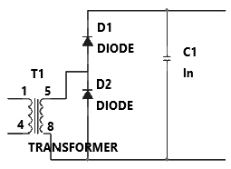
- 전파 정류회로
- 배전압 정류회로
- 진폭제한회로
- 위상반전회로
(정답률: 77%)
22. 다음 회로에서 출력 Vo의 전압은? (단, OPAMP는 이상적이다.)
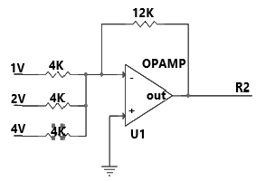
- -7
- -21
- 7
- 21
(정답률: 58%)
23. 다음에서 피변조파 V=Vc•(1+m coswt)•sinωt 이며, 반송파의 진폭은 4V, 변조도는 50%인 경우 직선 검파를 할 때 부하저항에 나타나는 신호파의 실효치 전압은 약 몇 V 인가? (단, 다이오드는 이상적인 소자이다.)(오류 신고가 접수된 문제입니다. 반드시 정답과 해설을 확인하시기 바랍니다.)
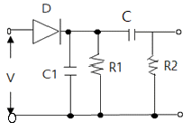
- 0.37
- 1.27
- 2.25
- 3.4
(정답률: 44%)
24. 어떤 차동 증폭기의 차동모드 전압이득이 5000, 동상모드 전압이득이 0.25일 때, CMRR은 약 몇 dB인가?
- 46
- 62
- 78
- 86
(정답률: 56%)
25. 다음 중 FET의 특징으로 옳은 것은?
- Ai(전류이득) = ∞
- 입력 저항이 10 ~ 100 Ω 정도로 작다.
- 전압 제어 방식이다.
- 이득×대역폭이 바이폴라(Bipolar) 보다 크다.
(정답률: 58%)
26. 이상적인 펄스파형에서 펄스폭이 20us이고, 펄스의 반복 주파수가 1000Hz일 때, 이 펄스파의 점유율 D는 얼마인가?
- 0.0⑤
- 0.002
- 0.⑤
- 0.02
(정답률: 58%)
27. 증폭기의 대역폭 정의로 맞는 것은?
- 중간영역전압이득의 100%가 시작되는 주파수에서 끝나는 주파수 사이
- 중간영역전압이득의 90%가 시작되는 주파수에서 끝나는 주파수 사이
- 중간영역전압이득의 70%가 시작되는 주파수에서 끝나는 주파수 사이
- 중간영역전압이득의 50%가 시작되는 주파수에서 끝나는 주파수 사이
(정답률: 66%)
28. 다음 정류회로에서 다이오드에 걸리는 피크 역전압(PIV)은 몇 V인가? (단, 다이오드는 이상적인 소자이다.)
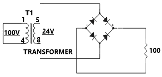
- 12
- 24
- 48
- 100
(정답률: 62%)
29. 다음 회로에서 궤환율 β는 얼마인가?(오류 신고가 접수된 문제입니다. 반드시 정답과 해설을 확인하시기 바랍니다.)
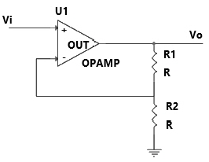
- 0.25
- 0.5
- 0.75
- 1
(정답률: 39%)
30. 다음 원소 중 도너원자로 틀린 것은?
- In
- P
- As
- Sb
(정답률: 72%)
31. 다음 중 정현파를 입력하면 구형파가 출력되는 회로는?
- 적분 회로
- 미분 회로
- 부트스트랩 회로
- 슈미트 트리거 회로
(정답률: 70%)
32. 다음 트랜지스터(BJT)의 동작점 중 증폭기로 동작하기 위한 영역은?
- cutoff region
- saturation region
- active region
- breakdown region
(정답률: 62%)
33. 다음 회로의 출력파형은 어느 것인가? (단, 다이오드는 이상적인 소자이다.)
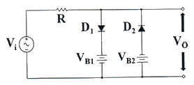
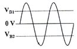
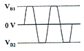
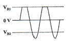
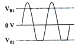
(정답률: 74%)
34. 다음 중 트랜지스터 회로를 증폭기로 사용하기 위해 바이어스를 설계 시 가장 적절한 것은?
- 베이스-이미터 사이는 역방향
컬렉터-베이스 사이도 역방향 - 베이스-이미터 사이는 역방향
컬렉터-베이스 사이는 순방향 - 베이스-이미터 사이는 순방향
컬렉터-베이스 사이도 순방향 - 베이스-이미터 사이는 순방향
컬렉터-베이스 사이는 역방향
(정답률: 71%)
35. 어떤 증폭기가 전압 이득(Av)이 50이고, 차단주파수(fc)가 20Hz일 때, 궤환 시 전압이득이 40이 되었다면, 변경된 차단주파수는 몇 Hz 인가?
- 8
- 16
- 20
- 25
(정답률: 44%)
36. 다음 연산증폭기의 특성 중 슬루 레이트(slew rate)에 가장 영향을 많이 받는 특성은?
- 잡음 특성
- 이득 특성
- 스위칭 특성
- 동상 제거 특성
(정답률: 71%)
37. 다음 중 트랜지스터(BJT) 증폭기 구성에서 C급 증폭기의 가장 큰 장점은?
- 잡음의 감소
- 효율의 증대
- 회로 구성이 간단
- 출력 파형의 왜율 감소
(정답률: 54%)
38. 반파정류기와 전파정류기의 다이오드 저항과 부하저항이 서로 같을 때 두 정류기의 전압 변동률 관계는?
- 반파정류기가 전파정류기에 비해 2배 더 크다.
- 전파정류기가 반파정류기에 비해 2배 더 크다.
- 전파정류기가 반파정류기에 비해 4배 더 크다.
- 전파정류기가 반파정류기의 경우가 같다.
(정답률: 50%)
39. 전압 증폭도가 항상 1보다 작은 증폭회로는?
- 컬렉터 접지 증폭회로
- 이미터 접지 증폭회로
- 베이스 접지 증폭회로
- 게이트 접지 증폭회로
(정답률: 53%)
40. 다단(3단) 증폭기의 전체 전압 이득은 약 몇 dB인가? (단, 각단의 전압이득Av1=10, Av2=15, Av3=20 이다.)
- 45
- 70
- 90
- 100
(정답률: 63%)
3과목: 논리회로
41. 논리식
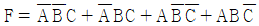
를 간략히 하면?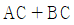
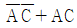
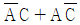
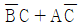
(정답률: 77%)
42. 다음 D플립플롭의 진리표에서 에 가장 (A), (B)에 적합한 값은?
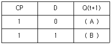
- (A) : 0, (B) : 0
- (A) : 0, (B) : 1
- (A) : 1, (B) : 0
- (A) : 1, (B) : 1
(정답률: 65%)
43. 다음 중 회로의 명칭과 출력함수식이 모두 옳은 것은?
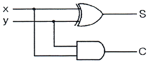
- 반가산기,
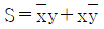
, C = xy - 전가신기,
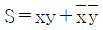
, C = xy - 인코더,
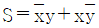
, C = x + y - 디코더,
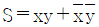
, C = x + y
(정답률: 72%)
44. 다음 논리회로의 기능으로 가장 옳은 것은? (단, 입력은 A, B로 합 또는 차는 X로, 자리올림 혹은 내림수는 Y로 표시한다.)
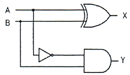
- 전가산기
- 반가산기
- 전감산기
- 반감산기
(정답률: 63%)
45. 2진수 (110010101001)2를 16진수로 표시하면?
- CA9
- BA9
- DA9
- EA9
(정답률: 71%)
46. 10진수로 1000까지 계수할 수 있는 업 카운터(up counter)는 최소 몇 개의 플립플롭으로 구성되어야 하는가?
- 8
- 10
- 12
- 16
(정답률: 59%)
47. BCD code 0110 1001 1000을 10진수로 변환한 것으로 옳은 것은?
- 698
- 696
- 968
- 618
(정답률: 72%)
48. 다음 중 4비트 시프트 레지스터의 구성으로 가장 옳은 것은?
- 4개의 T 플립플롭
- 4개의 S 플립플롭
- 4개의 RS 플립플롭
- 4개의 D 플립플롭
(정답률: 62%)
49. 조합논리회로의 특징에 대한 설명으로 옳지 않은 것은?
- 입출력을 갖는 논리 게이트의 집합으로 출력값은 0과 1의 입력값에 의해서만 결정되는 회로이다.
- 기억 회로를 갖고 있다.
- 반가산기, 전가산기, 디코더 등이 있다.
- 출력함수는 n개의 입력 변수 항으로 표시한다.
(정답률: 73%)
50. 다음 회로에 대한 설명 중 맞는 것은?
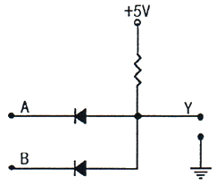
- AND 게이트(gate)로 동작한다.
- NOR 게이트(gate)로 동작한다.
- 입력 A=0V, B=0V일 경우 출력 Y=10V가 된다.
- 입력 A=0V, B=5V일 경우 출력 Y=5V가 된다.
(정답률: 70%)
51. 어떤 메모리가 16 개의 번지입력(address input), 4개의 데이터 입력, 4개의 데이터 출력을 가지고 있다고 가정할 때, 이 메모리의 용량은?
- 16×4 RAM
- 16K×4 RAM
- 64×8 RAM
- 64K×8 RAM
(정답률: 55%)
52. 다음 그림과 같은 회로의 논리식 F는?
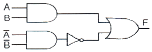
- A+B
- AB
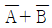
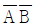
(정답률: 56%)
53. 다음 그림에서 JK플립플롭을 완성하기 위한 가장 옳은 버스(Bus) 결선 방법은?
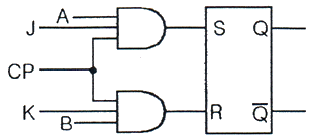
- Q 출력과
 출력을 Clock pulse(CP)에 결선한다.
출력을 Clock pulse(CP)에 결선한다. - Q 출력과 A입력,
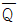
출력과 B입력을 각각 결선한다. - Q 출력과 입력,
 출력과 A입력을 각각 결선한다.
출력과 A입력을 각각 결선한다. - A입력과 B입력을 Clock pulse(CP)에 결선한다.
(정답률: 53%)
54. 다음 회로의 동작 상태와 가장 부합하는 카운터의 종류는?
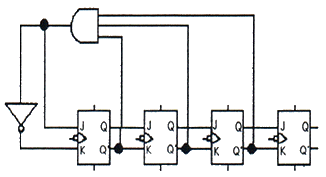
- 업 카운터(Up Counter)
- 12진 카운터
- 다운 카운터(Down Counter)
- 링 카운터(Ring Counter)
(정답률: 69%)
55. 논리식
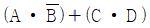
의 보수를 구하면?(정확한 보기내용을 아시는 분께서는 오류 신고를 통하여 내용작성 부탁드립니다. 정답은 2번입니다.)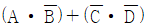
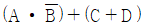
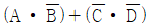
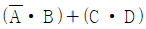
(정답률: 63%)
56. 다음 3 상태 논리 인버터에 A=High 이고, C=1 인 경우 출력 Y의 상태는? (단, C는 Enable이다.)
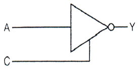
- High
- Low
- High Impendance
- Low Impendance
(정답률: 68%)
57. 연산 회로에 대한 설명 중 가장 옳지 않은 것은?
- 3개의 2진수를 가산할 수 있는 회로를 전가산기라 한다.
- 2개의 입력 크기를 비교하는 회로를 비교기라 한다.
- 2진수로 표시된 입력조합에 따른 BCD 코드를 0부터 9까지 동작할 수 있게 하는 회로를 인코더라 한다.
- 전가산기에서는 캐리 입력을 취급할 수 있다.
(정답률: 66%)
58. 플립플롭(flip-flop)을 응용해서 만들 수 없는 것은?
- 카운터(counter)
- MUX(multiplexer)
- 레지스터(register)
- SRAM(Static RAM)
(정답률: 58%)
59. 다음 논리식을 가장 간단히 나타낸 것은? (단, d는 무정의 조건(don't care 임))
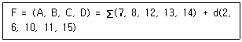
- AB + BC
- AB + BC + ACD
- AB + BC + AD′
- AB + BC BD
(정답률: 57%)
60. 에러(Error)를 검출하여 교정할 수 있는 코드는?
- Hamming Code
- ASCII Code
- Gray Code
- 3초가 Code
(정답률: 73%)
4과목: 집적회로 설계이론
61. n웰 CMOS 공정에 필수적으로 사용되는 레이어가 아닌 것은 무엇인가?
- n웰 레이어
- 액티브 영역
- 폴리실리콘
- p웰 레이어
(정답률: 70%)
62. 하드웨어기술언어(HDL)를 이용한 설계의 특징이 아닌 것은?
- 논리식을 생각할 필요가 없다.
- 설계내용을 쉽게 변경할 수 있다.
- 회로도 입력에 시간이 많이 걸린다.
- 설계자가 아니어도 이해하기 쉽다.
(정답률: 63%)
63. 레이아웃(layout) 설계규칙에 관한 설명 중 틀린 것은?
- 제조공정에서 요구하는 형상들의 집합을 정의하는 것이다.
- 여러 가지 마스크 정렬에 필요하다.
- 패키징(packaging)의 본딩 패드(bonding pad)의 크기에 대하여 정의할 때 필요하다
- 웨이퍼에서 각각의 회로를 잘라내는 스크라이브(scribe) 선과는 무관하다.
(정답률: 63%)
64. 다음의 정적 CMOS 로직(Static CMOS Logic)에 관한 설명 중 틀린 것은?
- 반대로 동작하는 nMOS와 pMOS를 이용하여 대칭적으로 동작시키는 회로 로직이다.
- 시간이 비교적 많이 경과해도 출력전압이 변하지 않는 대신 속도가 느리다.
- 출력은 VDD로만 연결되어 유지된다.
- nMOS와 pMOS를 이용하여 풀업(pull-up)과 풀다운(pull-down) 시키는 회로이다.
(정답률: 58%)
65. 반도체 공정에서 기체 상태의 화합물을 분해한 후 화학적 반응에 의해 반도체 기판 위에 박막이나 에피층을 형성하는 공정은?
- 진공증착(Evaporation)
- 스퍼터링(Sputtering)
- 화학기상증착(Chemical Vapor Deposition)
- 분자선증착(Molecular Beam Epitaxy)
(정답률: 77%)
66. 동적 CMOS 로직과 거의 같으나 출력단에 인버팅 래치가 달려 있는 로직은?
- 도미노 로직
- 카미노 로직
- 슈도 로직
- 트랜스 로직
(정답률: 78%)
67. 다음 각 로직 회로의 사양 중에서 잡음여유(Noise Margin)가 가장 큰 것은?
- TTL
- 5V CMOS
- 3.3V CMOS
- ECL
(정답률: 66%)
68. 동적 CMOS 로직에 대한 설명으로 틀린 것은?
- 정적 논리 회로보다 연속 회로의 구현이 쉽다.
- 동일한 기능에 대해 정적 논리 회로보다 작은 면적으로 설계가 가능하다.
- 입력 신호는 사전 충전(Precharge)때만 변화하여야 한다.
- 작은 기생 커패시턴스를 갖기 때문에 고속으로 동작 한다.
(정답률: 48%)
69. 다음 중 레이아웃 시 배선에 대한 설명으로 옳지 않은 것은?
- 블록의 배치가 끝나면 블록 사이의 신호선 연결, 즉 배선을 한다.
- 전원과 접지선, 클럭 등 중요 신호선은 여타 신호선을 배선한 후 마지막에 한다.
- 전원과 접지선을 배선할 때에는 가능한 충분한 폭을 확보하는 것이 중요하다.
- 타이밍상 중요한 신호는 먼저 연결하여 짧은 배선이 가능하도록 한다.
(정답률: 66%)
70. 다음 중 인버터 구현 시, 논리 '0' 의 신호는 잘 통과 시키고 '1' 의 신호는 잘 통과 시키지 못하는 poor 1 현상이 나타나는 구조는?
- pMOS
- nMOS
- CMOS
- BiCMOS
(정답률: 50%)
71. 이상적인 연산증폭기 특징에 대한 설명으로 가장 옳은 것은?
- 전압이득은 유한하다.
- 입력임피던스는 유한하다.
- 주파수 대역은 유한하다.
- 출력임피던스는 0 이다.
(정답률: 72%)
72. 반도체 웨이퍼에 대한 공정 중 메탈이나 폴리 실리콘 등을 웨이퍼 표면에 부착시키는 공정은?
- 에칭(etching) 공정
- 박막(thin film) 공정
- 확산(diffusion) 공정
- 현상(development) 공정
(정답률: 77%)
73. 다음 중 일반적인 CMOS 회로에 대한 설명과 거리가 먼 것은?
- CMOS는 nMOS와 pMOS가 결합된 형태이다.
- CMOS 회로의 집적도는 nMOS 회로보다 작다.
- CMOS 회로의 전력 소모는 nMOS 회로보다 크다.
- CMOS 회로의 동작속도는 nMOS 회로보다 느리다.
(정답률: 52%)
74. 게이트 어레이 설계기법의 일종으로 배선영역 없이 설계하는 기술은?
- SoG(sea of gate)
- PLD(programmable logic device)
- CPLD(complexed PLD)
- FPGA(field programmable gate array)
(정답률: 65%)
75. 동일한 조건에서 MOS 트랜지스터의 게이트 산화막 두께가 2배 증가하면 포화영역에서의 드레인 전류는 어떻게 변하는가?
- 2배로 증가
- 4배로 증가
- 1/2로 감소
- 1/4로 감소
(정답률: 63%)
76. LSI 설계 시 논리 설계 단계에서 고려해야 할 사항에 해당하지 않는 것은?
- 논리블록
- 게이트 레벨 기술
- 완성 설계 체크
- 시뮬레이션
(정답률: 56%)
77. CMOS domino 로직회로를 사용할 때의 특성에 해당되지 않는 것은?
- 팬 아웃(fan-out)은 항상 1 이다.
- EX-OR 와 같은 회로 구성으로 적합하다.
- 인버터를 사용하므로 구동 능력이 늘어난다.
- 같은 형태의 논리회로를 연속으로 연결할 수 있다.
(정답률: 59%)
78. 집적회로 칩 레이아웃에 있어서 평면계획과 거리가 먼 것은?
- 블록의 크기 추정 및 배치
- 최소 칩 면적을 얻을 수 있는 구조 계획
- 배선의 영역과 크기 계산
- 디자인 규칙 검사
(정답률: 69%)
79. 레이아웃 설계가 끝난 후, 레이아웃 설계 자료를 반영하여 논리 시뮬레이션을 다시 하는 것은?
- Logic Synthesis
- Bottom-up Design
- Structured Design
- Back Annotation
(정답률: 73%)
80. MOS 트랜지스터에서 게이트에서의 커패시턴스 관계식은? (단, L은 게이트의 길이, W는 게이트의 폭, Tox는 산화막의 두께, Cox는 SiO2의 유전율을 의미한다.)
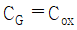
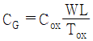
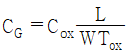
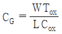
(정답률: 64%)